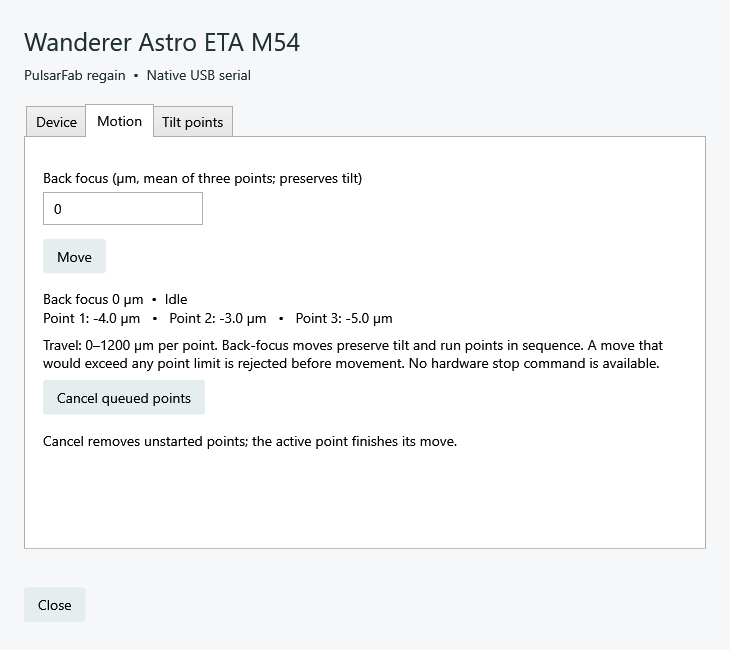

SDK-free serial control
Wanderer Astro ETA M54
Adjust back focus while preserving tilt, or move one of the three tilt points. The same Rust driver powers NINA, native ASCOM and Alpaca, without Wanderer Empire or a vendor SDK.
What do you want to do?
| Task | Use |
|---|---|
| Adjust back focus in NINA | Choose PulsarFab regain Wanderer Astro ETA M54 under focusers; open its setup gear for individual points. |
| Share the device between ASCOM apps | Choose the same name in the ASCOM focuser chooser. One local server owns the serial port for all regain ASCOM clients. |
| Control it from a headless host | Run the universal Alpaca server and configure focuser 2 at /setup/v1/focuser/2/setup. |
| Embed control in software | Use the regain-eta Rust crate or its JSON worker. |
Connect the device
- Connect USB. Install the CH340 serial driver if needed; keep the serial driver rather than replacing it with WinUSB.
- Disconnect Wanderer Empire and other serial clients. Refresh devices in regain and select the ETA's port.
- Connect and inspect all three encoder positions. Use Motion for back focus and Tilt points for individual targets.
The tested M54 uses COM3 and does not supply a unique hardware serial. Selection follows the port path, so verify it after changing USB connections. Regain checks the M54 identity but cannot distinguish two M54 units if their ports swap.
{kind=link}

Back focus and tilt
The focuser position is the mean encoder reading, rounded to whole micrometres (µm) and bounded to 0–1200. A back-focus move shifts all three targets equally, retaining tilt to 1 µm command resolution. Regain checks every target before sending any command and moves the points in sequence. Existing tilt reduces the available common travel.
Individual targets are 0–1200 µm per point. Status keeps the raw encoder readings, including small negative readings near zero. A move completes after three readings within 2 µm of its target and at least 500 ms; a 60-second timeout faults the connection without replaying the command. Physical validation of these completion rules is pending.
Share through native ASCOM
The native driver ASCOM.Regain.ETA.Focuser shares one Rust worker across 32-bit and 64-bit ASCOM applications. Each connection has its own lease; the last disconnect releases the port. It uses the same server and sharing code as regain's FocusCube3 and OFP2 drivers.
Native NINA, Alpaca and vendor software are separate port owners. Disconnect one before using another. There is no general serial-sharing background service.
Protocol and validation
The M54 streams three encoder positions over 19200-baud serial. The Rust driver uses the published protocol, validated against a passive trace of the attached device. No homing, temperature compensation or automatic image-based tilt analysis is provided.
See the worker commands and protocol notes, validation record, and passive serial trace. Linux and macOS physical transport testing remains pending.